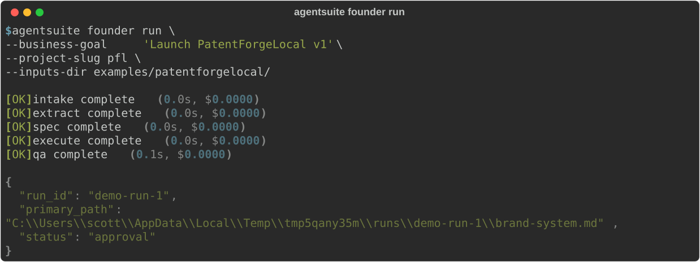
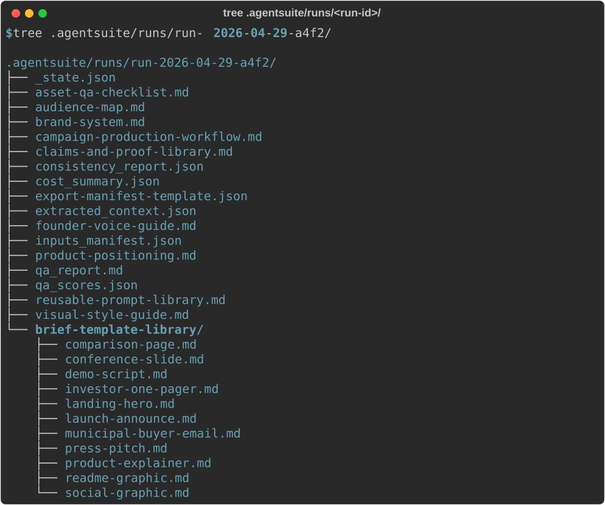
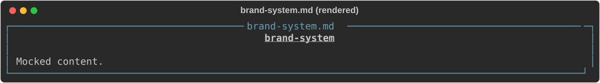
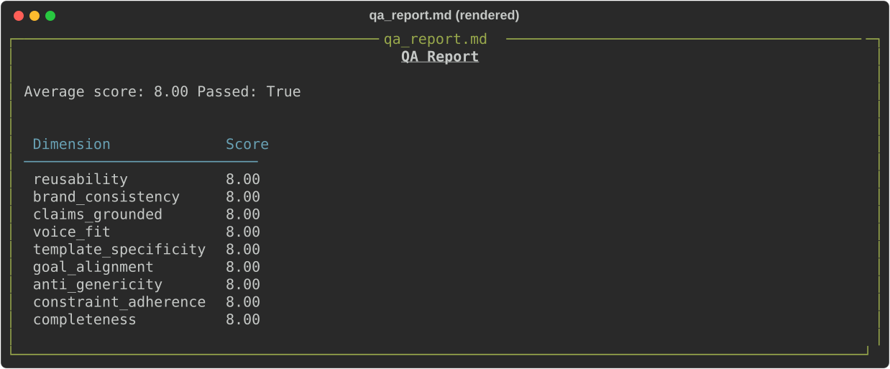
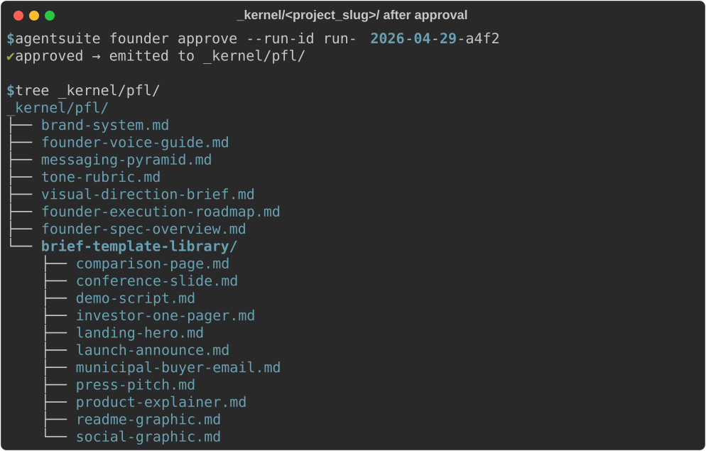

What it does
AgentSuite codifies the operating system around AI generation. Each agent walks a five-stage pipeline (intake → extract → spec → execute → qa) with a kernel-managed approval step, persists 26 artifacts to disk, and promotes approved output into a long-lived _kernel/ that downstream agents consume. The result is a reusable creative-ops or product-ops layer, not a one-off content generator.
Install
pip install "agentsuite[anthropic] @ git+https://github.com/scottconverse/AgentSuite.git"
# other providers: [openai] [gemini] [ollama] [all]
# or, no install:
uvx --from git+https://github.com/scottconverse/AgentSuite.git agentsuite-mcpQuick start (CLI)
export ANTHROPIC_API_KEY=sk-ant-...
agentsuite founder run \
--business-goal "Launch PatentForgeLocal v1" \
--project-slug pfl \
--inputs-dir ./examples/patentforgelocalSample run

Browse the full output of a Founder run — 14 artifacts, no install required — at examples/sample-output/founder/. The on-disk shape is identical to a live run; the free-text bodies are deterministic-mock scaffold (see the directory README).
What you get on disk

Spec artifacts (rendered, mock-LLM scaffold)
The screenshots below are rendered from deterministic mock-LLM output -- the artifact shape is real, but the body text is scaffold strings. To see real LLM-generated content, run the agent yourself with a configured provider; see the sample-output README.


After approval

Quick start (MCP)
Codex — add to ~/.codex/mcp.toml:
[servers.agentsuite]
command = "uvx"
args = ["agentsuite-mcp"]
[servers.agentsuite.env]
AGENTSUITE_ENABLED_AGENTS = "founder,design,product,engineering,marketing,trust_risk,cio"Claude Code / Cowork — add to .mcp.json:
{
"mcpServers": {
"agentsuite": {
"command": "uvx",
"args": ["agentsuite-mcp"],
"env": {"AGENTSUITE_ENABLED_AGENTS": "founder,design,product,engineering,marketing,trust_risk,cio"}
}
}
}Shipped agents
v0.1 Founder
Brand system, brief library, voice guide, prompt library.
v0.2 Design
Brief generation + brand QA scoring.
v0.3 Product
PM intent → UI spec → coding handoff.
v0.4 Engineering
9 engineering spec artifacts (ADR, system design, API spec, data model, security review, deployment plan, runbook, tech debt register, performance requirements) + 8 brief templates.
v0.5 Marketing
9 marketing spec artifacts (campaign brief, target audience profile, messaging framework, content calendar, channel strategy, SEO keyword plan, competitive positioning, launch plan, measurement framework) + 8 brief templates.
v0.6 Trust/Risk
9 trust and risk spec artifacts (threat model, risk register, control framework, incident response plan, compliance matrix, vendor risk assessment, security policy, audit readiness report, residual risk acceptance) + 8 brief templates.
v0.7 CIO
9 IT strategy and governance artifacts (IT strategy, technology roadmap, vendor portfolio, digital transformation plan, IT governance framework, enterprise architecture, budget allocation model, workforce development plan, IT risk appetite statement) + 8 brief templates.
Roadmap
All 7 core agents are shipped and stable. Current focus: multi-agent pipelines to chain agents end-to-end, and per-day cost controls for production safety. See CHANGELOG.md for detailed updates — community contributions welcome.
Documentation
- README — install, quickstart, configuration
- USER-MANUAL.md — plain-language walkthrough
- README-FULL.pdf — full reference with architecture diagrams
- CONTRIBUTING.md — agent-implementation guide
- CHANGELOG.md
License
MIT. Source on GitHub. Issues + discussion welcome.